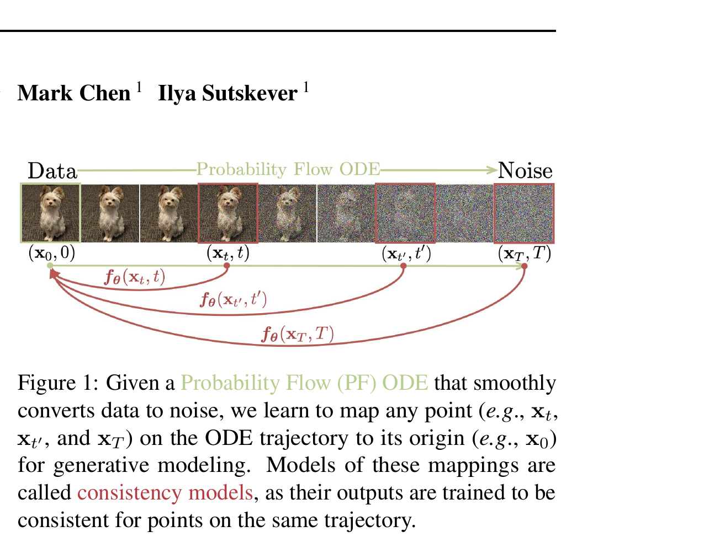
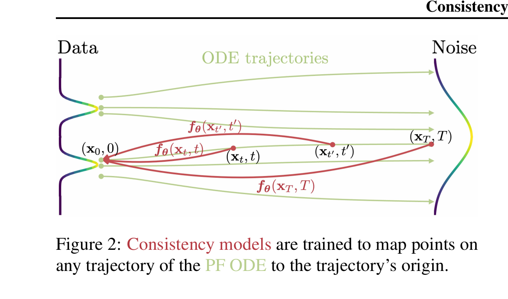
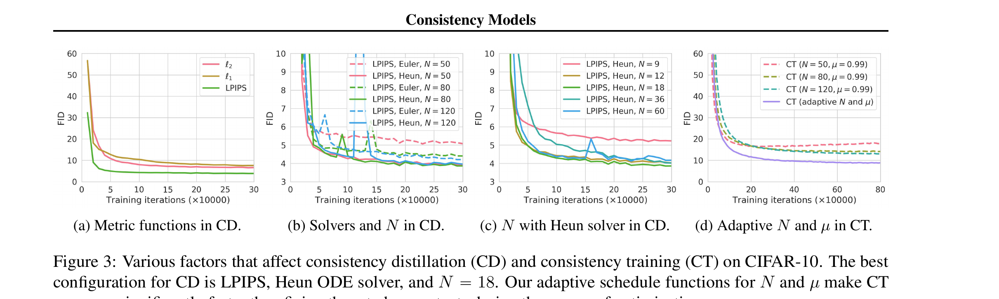
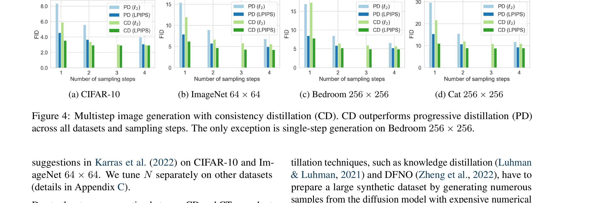
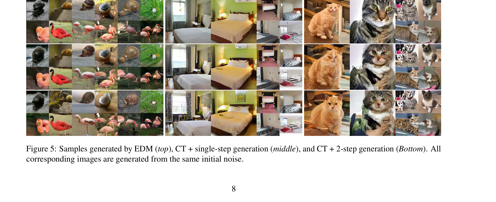
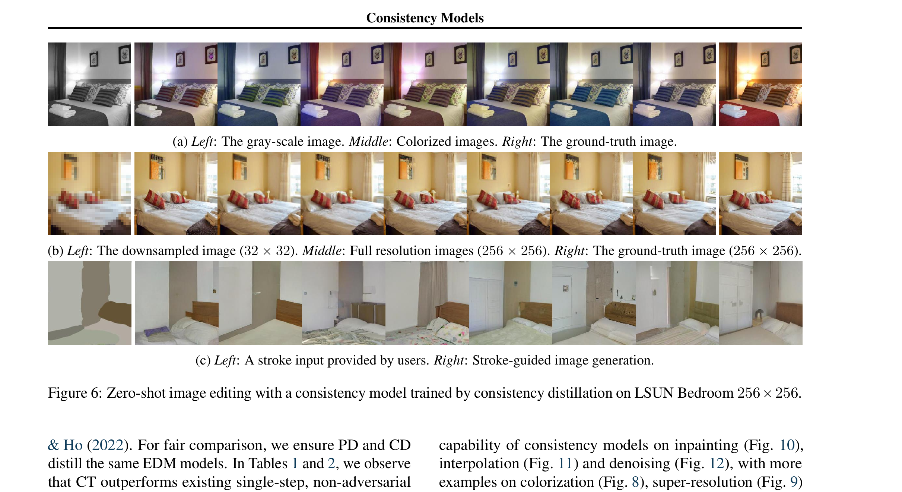

Consistency Models
Yang Song, Prafulla Dhariwal, Mark Chen, Ilya Sutskever · OpenAI · arXiv 2303.01469 · ICML 2023
你之前问"π₀.₆ 用 Consistency Model 吗"——答案是没有，但如果你想给 flow matching VLA 配一篇推理加速笔记， 一切都得从这篇 原始 Consistency Models（Song et al. 2023）开始。
读完你会拿到三件事：
(1) Diffusion 为什么慢——它的 sampling 是一段沿 PF ODE 走 N 步的轨迹
(2) Consistency Model 怎么把"沿轨迹走 N 步" 蒸馏成"从轨迹任意一点直接跳到起点"——
这是一个简单到让人怀疑能不能 work 的几何性质
(3) 同一套自一致性约束既能蒸馏已有 diffusion (CD)，
也能从零训练独立模型 (CT)
阅读路径：§1-§3 是概念/数学骨架（必读）， §4-§5 是两种训练方法（CD / CT 二选一即可，先看 §4）， §6 实验快速扫，§7 拉回到具身 AI 视角。
§1 一句话 + 你已经知道的
Diffusion 模型质量好，但 sampling 要 10-2000 次网络前向。 Consistency Model 训练一个函数 $f_\theta(x_t, t)$，让它把任意时刻 $t$ 的噪声样本 直接映射回干净样本 $x_\epsilon$——所以 sampling 只要 1 次前向就够。 既能由现成 diffusion 蒸馏出来 (CD)，也能从零训练 (CT)； CIFAR-10 上 1-step FID = 3.55，是当时一步生成的 SOTA。
展开原文 · Abstract 核心句
"We propose consistency models, a new family of models that generate high quality samples by directly mapping noise to data. They support fast one-step generation by design, while still allowing multistep sampling to trade compute for sample quality."
1.1 你已经知道的（在我们之前的笔记里见过）
| Flow Matching | π₀ 的 Action Expert 用的就是它——训练时回归速度场 $v_\theta(x_t, t) \approx x_1 - x_0$， 推理时 N 步 Euler 积分从噪声走到样本。Consistency Model 想替代的就是"N 步积分" 这一步。 |
| Probability Flow ODE | 注意原生方程的不对称：Diffusion 原生是 SDE（前向加噪是布朗运动），PF ODE 是它的派生形式（Song 2021 证明同分布）；Flow Matching 原生就是 ODE，没有 SDE。 Consistency Model 工作在这条 ODE 上——所以原版套在 diffusion 时实际是用它的 PF ODE，后续 Consistency Flow Matching 直接套 flow matching 的原生 ODE。 |
| π₀ 推理流程 | 10 步 Euler。每一步都过一遍 Action Expert——这就是机器人控制实时性的瓶颈。 |
想象一条山路，从山顶（噪声 $x_T$）到山脚（数据 $x_0$）。
- Diffusion / Flow Matching：教模型在每一段路上"下一步往哪走"——你必须沿路一段一段走 N 步
- Consistency Model：教模型从路上任何一点都能"直接传送回山脚"——一步到位
"沿同一条山路上任意两点都能传送到同一个山脚" 就是论文标题里的 self-consistency（自一致性）。
1.2 这篇论文做了什么

§2 前置 · Diffusion 与 PF ODE
§1 给出了直觉。但要理解"$f_\theta$ 把 $x_t$ 映回 $x_\epsilon$" 里的 $x_t$ 究竟是什么，得先把 diffusion 的前向加噪过程（SDE）和反向去噪轨迹（PF ODE）讲清楚。 这一节是论文 §2 的浓缩——三组等式 + 一个直觉就够。看完之后，§3 的"consistency function" 就只是给这条 ODE 加一个新约束。
2.1 从 SDE 到 ODE
Diffusion 的前向过程是不断往数据加高斯噪声，写成连续时间随机微分方程：
- $\mathbf{x}_t$
- 时刻 $t$ 的样本。$t=0$ 是干净数据，$t=T$ 是纯噪声
- $\boldsymbol{\mu}(\mathbf{x}_t, t)$
- drift 漂移项——确定性的"往哪走"
- $\sigma(t)\,d\mathbf{w}_t$
- diffusion 扩散项——随机的高斯噪声注入。$d\mathbf{w}_t$ 是布朗运动微元
- 论文 Karras 设定
- $\boldsymbol{\mu} = \mathbf{0}$，$\sigma(t) = \sqrt{2t}$——所以 $\mathbf{x}_t \sim \mathcal{N}(\mathbf{x}_0, t^2 \mathbf{I})$，$t$ 直接就是噪声标准差
Diffusion 原生是 SDE（Eq.1）——但 Song 2021 证明：上面这个 SDE 有一个对应的确定性 ODE，跑出来的边缘分布 $p_t(x)$ 一模一样：
Consistency Model 工作在这条派生出来的 ODE 上，不是原生 SDE 上—— 如果 diffusion 只有 SDE 没有 PF ODE，CM 根本无从下手（因为 SDE 的"同一条轨迹" 本来就是随机的，没法定义自一致性）。 Flow Matching 因为原生就是 ODE，所以 self-consistency 可以直接套，不需要先做这一步派生。
- $\nabla \log p_t(\mathbf{x}_t)$
- score function——$\mathbf{x}_t$ 在噪声分布 $p_t$ 下的"密度梯度"，告诉你"往哪走概率更大"
- 整个方括号
- SDE 的漂移 - 半个噪声方差 × score = ODE 的"等效速度场"
- 没有 $d\mathbf{w}_t$
- 这是关键——纯确定性。从同一个噪声出发，永远走到同一个数据
2.2 Empirical PF ODE
score 不可知——所以训一个网络 $\mathbf{s}_\phi(\mathbf{x}, t) \approx \nabla \log p_t(\mathbf{x})$ 去近似。 代回 Eq.2，加上 Karras 简化（$\boldsymbol{\mu}=0, \sigma = \sqrt{2t}$），得到论文实际用的版本：
- $\mathbf{s}_\phi$
- 预训练好的 score model（diffusion 的标准产物）
- $-t \cdot \mathbf{s}_\phi$
- "逆着 score 方向 + 按时间 $t$ 缩放" 的速度——把这个速度从 $T \to \epsilon$ 反向积分，就得到一张干净图像
- $\hat{\mathbf{x}}_T \sim \mathcal{N}(\mathbf{0}, T^2 \mathbf{I})$
- 采样起点：纯高斯噪声
- $\epsilon = 0.002$
- 积分终点不取 $0$，避免 score 在 $t \to 0$ 时数值爆炸
2.3 为什么慢 · 多步 ODE 求解
Eq.3 是个 ODE，要数值求解。最简单的 Euler 法：
x = sample N(0, T²I)
for t = T, T-Δt, ..., ε:
x = x - Δt · t · s_phi(x, t) # 每一步都过一次网络
return x想要质量好（FID 低），就得 $\Delta t$ 小——意味着 N 大。 实测 EDM 在 ImageNet 64 上要 NFE = 79 次评估才能拿到 FID 2.44。 每张图过 79 次 U-Net——慢的本质就在这。
既然 Eq.3 给定起点 $\mathbf{x}_T$ 后，整条轨迹都是确定的—— 那干嘛非要一步一步走完？训一个 $f_\theta$ 直接学"$\mathbf{x}_t \mapsto \mathbf{x}_\epsilon$" 这个映射不就完了？ 这就是 §3 的全部内容。
§3 Consistency Model 是什么
§2 把"正确轨迹" 写出来了——一条 PF ODE，从噪声 $\mathbf{x}_T$ 确定性地走到样本 $\mathbf{x}_\epsilon$。 这一节正面回答：$f_\theta$ 是怎么定义的？怎么保证它在 $t=\epsilon$ 时是 identity？怎么从 $f_\theta$ 采样？ 读完 §3 你已经能写出 inference code——训练放在 §4-§5。
3.1 一致性函数 · 自一致性
给定一条 PF ODE 轨迹 $\{\mathbf{x}_t\}_{t \in [\epsilon, T]}$，一致性函数定义为：
self-consistency 性质：对同一条轨迹上的任意两个时刻 $t, t' \in [\epsilon, T]$，

3.2 边界条件 + skip 参数化
$f_\theta$ 的形式约束：在 $t = \epsilon$ 时必须是恒等映射——
为什么必要？因为 $\mathbf{x}_\epsilon$ 已经是干净样本了——再过 $f_\theta$ 不能改变它。 如果模型不满足这个，self-consistency 一个 trivial 解就是 $f_\theta \equiv \mathbf{0}$（所有输入都映到 0），完全不可用。
论文给两种架构层面满足这个边界条件的方法：
- $F_\theta(\mathbf{x}, t)$
- 真正的神经网络（U-Net / Transformer），输出形状和 $\mathbf{x}$ 一样
- $c_\text{skip}(t)$
- "残差权重"——$t=\epsilon$ 时取 1（保留原样），$t$ 大时减小
- $c_\text{out}(t)$
- "修正权重"——$t=\epsilon$ 时取 0（不动），$t$ 大时增大
- 整体结构
- 形如 ResNet 的 skip connection。$t=\epsilon$ 时退化成恒等映射；$t$ 越大，网络贡献越大。边界条件 almost for free 满足，不需要额外 loss
Karras EDM 论文里的 preconditioning（$D_\theta(x, \sigma) = c_\text{skip}\cdot x + c_\text{out}\cdot F_\theta$）和 Eq.5 形式完全一样。 Consistency Model 直接复用这套架构——这就是为什么作者说 CM "borrow powerful diffusion model architectures" 几乎零成本。
3.3 单步 / 多步采样
x_T = sample N(0, T²·I) # 高斯噪声
x_eps = f_theta(x_T, T) # 一次前向就出图就这么直接。1 NFE（Number of Function Evaluations）—— 比 EDM 79 步快了 79 倍。
Input: 模型 f_θ, 中间时间点 τ_1 > τ_2 > ... > τ_{N-1}, 噪声 x̂_T
x ← f_θ(x̂_T, T) # ① 先一步出粗结果
for n = 1 to N-1:
z ~ N(0, I) # ② 重新加噪声
x̂_{τ_n} ← x + √(τ_n² - ε²) z # 噪声水平降到 τ_n
x ← f_θ(x̂_{τ_n}, τ_n) # ③ 再一步去噪
return x一步出粗结果 → 加少量噪声 → 再一步去噪 → 加更少噪声 → ... 这是 "去噪/加噪交替" 的迭代。 $N=2$ 通常就比 $N=1$ FID 好不少（CIFAR-10：3.55 → 2.93）；$N=4$ 之后边际收益很小。
$\{\tau_1, \tau_2, \dots, \tau_{N-1}\}$ 不是均匀分的—— 论文用 greedy ternary search，一个一个挑出能让 FID 最小的中间点。 假设 FID 关于"下一个时间点" 是单峰的（实测成立），就能 $O(\log)$ 找到最优。
3.4 零样本编辑（一次训练，免费送的能力）
因为 $f_\theta$ 学到的是"把任意噪声水平的 $\mathbf{x}_t$ 去噪到 $\mathbf{x}_\epsilon$"，所以不需要重新训练就能做：
| 插值（Interpolation） | 在两个噪声向量之间走直线 → 得到样本之间的平滑过渡 |
| 去噪（Denoising） | 给一张被加了任意噪声的图，一步出干净版本 |
| Inpainting / 上色 / 超分 | 用迭代替换方案（Algorithm 1 + 已知像素 mask） |
| Stroke-guided 生成 | 用户涂个粗笔触 → 模型生成符合该笔触的高质量图（SDEdit 风格） |
具体编辑结果在 §6.3 看 Fig 6。
§4 训练 (1) · Consistency Distillation
§3 给出了 $f_\theta$ 的定义和架构——但怎么训出来没说。 最直接的办法：手上已经有一个训好的 diffusion 模型（teacher），用它来"制造同一条轨迹上的相邻两点"， 然后让 $f_\theta$ 在这两点上输出一致——这就是 Consistency Distillation (CD)。 §5 再讲怎么把 teacher 也甩掉。
4.1 直觉 · 跟着老师沿 ODE 走一小步
- 真实数据 $\mathbf{x} \sim p_{data}$，加高斯噪声 → $\mathbf{x}_{t_{n+1}} \sim \mathcal{N}(\mathbf{x}, t_{n+1}^2 \mathbf{I})$（轨迹后段一点）
- 用 teacher diffusion + 一步 ODE solver 反向走 $\Delta t$ → 得到同一条轨迹的前一点 $\hat{\mathbf{x}}_{t_n}^{\boldsymbol\phi}$
- 强制 $f_\theta(\mathbf{x}_{t_{n+1}}, t_{n+1}) \approx f_{\theta^-}(\hat{\mathbf{x}}_{t_n}^{\boldsymbol\phi}, t_n)$ —— self-consistency
4.2 CD loss + EMA target
用 teacher score $\mathbf{s}_\phi$ 走一步数值 ODE得到 $\hat{\mathbf{x}}_{t_n}^{\boldsymbol\phi}$：
然后定义 Consistency Distillation Loss：
- $\mathbf{f}_\theta$（online）
- 正在被梯度更新的当前模型 · 接收 $t_{n+1}$ 时刻的样本
- $\mathbf{f}_{\theta^-}$（target）
- 目标模型，权重是 online 的 EMA · 接收 ODE 反推的 $t_n$ 时刻样本 · 不接收梯度（stop-grad）
- $d(\cdot, \cdot)$
- 距离函数：$\ell_2$ / $\ell_1$ / LPIPS（实测 LPIPS 远胜，§6.1 Fig 3a）
- $\lambda(t_n)$
- 时间相关的权重系数 · 论文实验里直接取 $\lambda \equiv 1$ 就行
- $n \sim \mathcal{U}\{1, N-1\}$
- 时间索引均匀采样 · $N$ 是把 $[\epsilon, T]$ 分成几段
为什么要 EMA？如果 target 直接用 $\theta$，loss 同时更新两端 → 训练塌缩到 trivial 解。 stop-grad + EMA 是从 BYOL / MoCo 借来的稳定技巧——论文里也明说类似 deep RL 的 target network。
4.3 Algorithm 2 · CD 完整流程
Input: 数据 D, 学习率 η, ODE solver Φ(·;φ), 距离 d, 权重 λ, EMA decay μ
1: θ⁻ ← θ # target = online 初始化
2: repeat
3: x ~ D, n ~ U{1, N-1} # 采数据 + 时间索引
4: x_{t_{n+1}} ~ N(x; t²_{n+1} I) # 在 t_{n+1} 加噪声
5: x̂_{t_n}^φ ← x_{t_{n+1}} + (t_n - t_{n+1}) Φ(x_{t_{n+1}}, t_{n+1}; φ)
# 用 teacher 反推一步到 t_n
6: L ← λ(t_n) d(f_θ(x_{t_{n+1}}, t_{n+1}), f_{θ⁻}(x̂_{t_n}^φ, t_n))
7: θ ← θ - η ∇_θ L # 更新 online
8: θ⁻ ← stopgrad(μθ⁻ + (1-μ)θ) # EMA 更新 target
9: until convergence假设 $f_\theta$ Lipschitz 连续 + ODE solver 局部误差 $O((\Delta t)^{p+1})$。 如果 CD loss 收敛到 0，那么 $\sup |f_\theta(x, t_n) - f(x, t_n; \phi)| = O((\Delta t)^p)$—— 即 student 与"沿 PF ODE 真实积分到 $\epsilon$ 的结果" 的误差是 ODE solver 阶数 $p$ 的多项式。
实践含义：用 Heun (二阶, $p=2$) 比 Euler (一阶, $p=1$) 误差小一阶——这就是 §6 实验里 Heun 大胜 Euler 的理论解释。
§5 训练 (2) · Consistency Training（独立）
§4 的 CD 有一个尴尬：必须先有一个训好的 diffusion teacher。 那 CM 就只是 diffusion 的"压缩器"，不是独立的生成式模型族。 §5 给出一个简洁到几乎像作弊的技巧——用一个无偏估计替代 teacher 的 score， 把整个流程不依赖任何预训练模型。这是 CM 论文真正的"独立宣言"。
5.1 摆脱 teacher 的关键技巧
给定 $\mathbf{x} \sim p_{data}, \mathbf{x}_t \sim \mathcal{N}(\mathbf{x}, t^2 \mathbf{I})$：
score matching 训练目标本来就等价于"预测从 $\mathbf{x}_t$ 回到 $\mathbf{x}$ 的方向"。 既然单样本 $-(\mathbf{x}_t - \mathbf{x})/t^2$ 就是 score 的无偏估计——那训 CM 时根本不需要先训一个 score 网络， 直接用真实 $\mathbf{x}$ 和加噪 $\mathbf{x}_t$ 算一个差就行。teacher 被替代了。
5.2 CT loss
把 score 估计代回 Eq.6（Euler 时 $\Phi = -t \mathbf{s}_\phi$）：
所以 CD loss 退化成不需要 teacher 的形式：
- $\mathbf{x} + t_{n+1}\mathbf{z}$
- 大噪声水平的样本（轨迹后段）
- $\mathbf{x} + t_n\mathbf{z}$
- 小噪声水平的样本（轨迹前段）—— 注意 $\mathbf{z}$ 是同一个，所以这两个样本"在统计意义上" 是同一条轨迹上的
- 整个 loss
- 同一条隐含轨迹上相邻两点的输出要一致——和 CD loss 几何意义完全相同，只是不需要 teacher
- Theorem 2
- $N \to \infty$ 时 $\mathcal{L}_{CT}^N = \mathcal{L}_{CD}^N + o(\Delta t)$——CT 在极限下就是 CD，CT 是 CD 的 teacher-free 等价
5.3 Algorithm 3 + 自适应 N/μ
Input: 数据 D, 学习率 η, step schedule N(·), EMA schedule μ(·), d, λ
1: θ⁻ ← θ; k ← 0 # 初始化
2: repeat
3: x ~ D, n ~ U{1, N(k)-1} # N 随训练步数 k 增长
4: z ~ N(0, I) # 单一噪声向量
5: L ← λ(t_n) d(f_θ(x + t_{n+1}z, t_{n+1}), f_{θ⁻}(x + t_n z, t_n))
6: θ ← θ - η ∇_θ L
7: θ⁻ ← stopgrad(μ(k)θ⁻ + (1-μ(k))θ) # μ 也随 k 变
8: k ← k + 1
9: until convergenceCT 有一个 bias-variance trade-off（Fig 3d）：
- $N$ 小（$\Delta t$ 大）：variance 低（噪声两点差大、信号清晰）但 bias 高（CT loss 偏离 CD loss）
- $N$ 大（$\Delta t$ 小）：bias 低（更接近 CD）但 variance 高（两点几乎一样、梯度信号弱）
解：训练初期用小 $N$（快速收敛），后期用大 $N$（精细化）——schedule $N(k)$ 和 $\mu(k)$ 都随训练步 $k$ 渐变。 Fig 3d 显示 adaptive 比 fixed 收敛快好几倍。
§6 实验
§3-§5 给了方法。这一节回答三个具体问题： (1) 距离 $d$、ODE solver、$N$ 怎么选最好？（消融） (2) CD/CT 比当时 SOTA 的 Progressive Distillation 强多少？（横向比较） (3) 零样本编辑实际效果如何？
6.1 消融 · LPIPS / Heun / 自适应 schedule（Fig 3）

| 消融维度 | 结论 |
| 距离函数 $d$（Fig 3a） | LPIPS 完胜 $\ell_1, \ell_2$。原因：CM 的输出是图像，LPIPS 是为感知相似度设计的 |
| ODE solver（Fig 3b/c） | Heun（二阶）> Euler（一阶），与 Theorem 1 的 $O((\Delta t)^p)$ 一致 |
| $N$ 的选择（Fig 3c） | CIFAR-10 上 $N=18$ 最优；$N$ 大到一定程度后边际收益消失 |
| CT 的 $N(k), \mu(k)$（Fig 3d） | 固定 $\mu=0.99$ 不论 $N$ 多少都不如 adaptive；adaptive 收敛速度快 2-3 倍 |
6.2 CD vs Progressive Distillation（Fig 4 + Tables）

| 任务 / 方法 | NFE | FID |
| CIFAR-10 · CD 1-step | 1 | 3.55（当时 1-step SOTA） |
| CIFAR-10 · CD 2-step | 2 | 2.93 |
| CIFAR-10 · CT 1-step（独立训） | 1 | 8.70（不如 CD，但已超 GAN baseline） |
| ImageNet 64 · CD 1-step | 1 | 6.20（当时 1-step SOTA） |
| ImageNet 64 · CD 2-step | 2 | 4.70 |
| ImageNet 64 · EDM（参照） | 79 | 2.44 |
读法：CD 1-step 比 EDM 79-step 慢慢追——FID 3.55 vs EDM CIFAR-10 2.04， 但 NFE 从 79 降到 1，速度提升 79 倍。

6.3 零样本图像编辑（Fig 6）

§7 收获 · 局限 · 与 VLA / π₀ 的联系
把整篇压成一张卡片——三条 takeaway + 论文自承的局限 + 对 VLA 推理加速这条线的具体启示。 读完你应该能回答："这篇论文对 π₀ 系列的 flow matching 加速有什么直接借鉴？"
7.1 三条 takeaway
PF ODE 的轨迹是确定性的——所以同一条轨迹上任意点都映到起点这件事本来就成立， CM 只是把它做成显式的训练目标。这是为什么训练稳定（vs GAN 的 minimax）、不需要 adversarial loss 的根本原因。
CD 的定位是把已有 diffusion 蒸馏成 1-2 step——产业最容易直接采用。 CT 的定位是不依赖 diffusion 也能从零训——把 CM 抬升为和 diffusion / GAN / VAE 并列的新生成式模型族。 两者同构，但商业落地价值完全不同。
因为 $f_\theta$ 学的是"任意噪声水平 → 干净样本" 的映射，所以 multistep + iterative replacement 能直接做 inpainting / colorization / super-resolution。 这是 GAN 永远拿不到的能力，也是 CM 和 diffusion 的共同优势。
7.2 论文自承的局限（§7）
| CT 在高分辨率上慢 | LSUN Bedroom/Cat 256 上 CT 的 FID 明显落后 CD——独立训练没那么容易在大图上 work |
| 连续时间 CT 难实现 | Theorems 3-6 给了 $N \to \infty$ 的连续时间版本，但需要 forward-mode autodiff，主流框架支持差 |
| 多步 ODE solver 未集成 | Eq.6 只用了一步 solver；高阶多步 solver 接进 CM 是 future work |
| Adversarial 不被采纳 | 论文刻意避开 GAN-style 训练——但后续工作（如 LCM-LoRA、Latent Consistency Model）有把 adversarial 加回来的 |
7.3 与 VLA / π₀ 的联系
π₀ / π₀.₅ / π₀.₆ 的 Action Expert 都是 flow matching，推理 10 步 Euler。 放到 50 Hz 实时控制场景，这个延迟是真实瓶颈。Consistency 思路给的解决路径有三个层次：
- 直接套 CD（蒸馏）：把训好的 π₀ flow matching action expert 当 teacher，蒸馏一个 1-step student。 风险：原版 CM 的 PF ODE 来自 diffusion，flow matching 直接套要走 Consistency Flow Matching（Yang et al. 2024）的变体
- CT-style 从零训：用 §5 的无偏估计技巧，让 action expert 直接学自一致性，绕过 flow matching 的 multi-step 推理
- 架构层面借鉴 Eq.5：skip parameterization 让 boundary condition 几乎免费——这一点对任何"$t$ 条件去噪网络" 都适用，包括机器人 policy
Consistency Policy（Prasad et al. 2024）已经把 Consistency 思路套到了 Diffusion Policy 上—— 机器人控制延迟从 10 步降到 1-2 步。但π₀ 系列截至 π₀.₆ 仍未公开用这套加速。 合理推测：PI 把"从经验里学"（RECAP RL）放在采样加速之前，因为前者解决的是"能不能用"，后者只优化"用得快不快"。
📄 原文：consistency-models.pdf · 🔗 arXiv 2303.01469 · 🔗 相关：Flow Matching · π₀ VLA · π₀.₆ RECAP